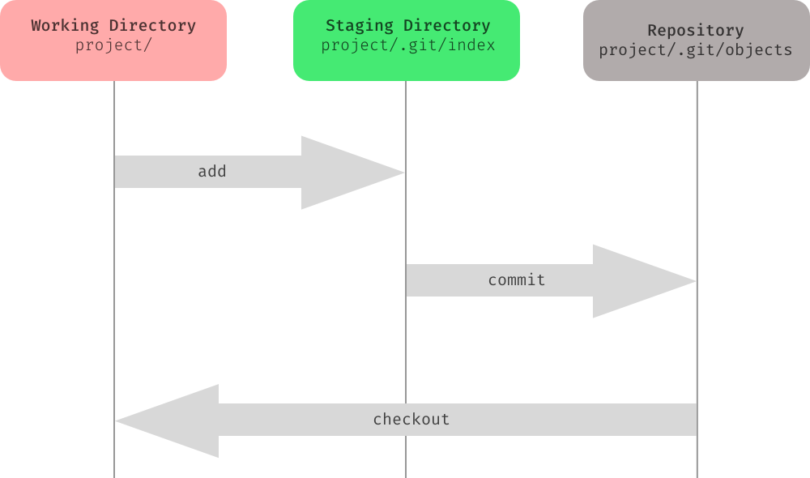

Git Stuff
- How it Works
- Command Basics
- Advanced Things
How it Works
Traditional VCS

stores base file and each new version of file is calculated from base + deltas
Git

each version of file is stored, and commits point to a tree of files and hashes
Git Internals pt1
- Object Types
- Commit - author, message, pointer to a tree of changes
- Tree - pointer(s) to file names, content, other trees
- Blob - data
- Stored as files on your filesystem (ie .git folder)
Git Internals pt2
- Tags and Branches
- Pointers to commits
- Not full copies
- Allows a naming commits
- additional meta information
Git is a Giant Graph
- Directed Acyclic Graph
- No Loops / Cycles
- Commits all reference their parent
- Branches are simply named pointers to commits
- HEAD: special pointer to the latest commit
- Moves automatically, on your current active branch
- Object files: each object file has a 40-char sha1 hash as its filename unique, used extensively as unique reference.
- can use first several chars in git commands as shortcut (just needs to be unique)
- git uses first 2 chars to organize in directories
- display contents with:
git cat-file -p {SHA}Why is All this Important?
Git is essentially a fancy content management system (CMS) for files...
...and understanding how it works helps make sense of what the commands do
Your Local Repo Disected
3 trees: working directory, index (staging), and the repo
Basic Git Commands
git init
# creates .git folder in your working directory
git status
# Show the working tree status
git add {filename}
# Add file contents to the index
git commit -m "{message}"
# Record changes to the repository
Git Branch Commands pt1
git branch {testbranch}
# creates a new branch called testbranch
git checkout {branchname}
# switches your working directory to the contents
# of the latest commit on target branch
git checkout -b dhoman/11111_AC_product_typo_bugfix
# quicker way to create a new branch and immediately
# checkout the branch
git branch -d {branchname}
# delete the branch
Git Branch Commands pt2
git push {origin} {branch}
# pushes branch to the remote named origin
git pull
# performs a git fetch and a git merge on the current active branch
git diff {source_branch} {target_branch}
# shows differences between two branches
# (good way to see merge conflicts before getting them)
git diff {source_branch}...{target_branch}
# git diff ... (3 ''.'s ) will go back to
# first common ancestor and perform diffs from that
git tag
# lists all tags
git tag -l "v1.9"
# lists all tags starting with v1.9
git tag -a {v1.9.2} {9fceb02}
# adds tag v1.9.2 to commit starting with SHA 9fceb02
# not always sent by default to remotes when doing git push
# adding --tags will add them in a git push
git cherry-pick {SHA}
# apply the changes from SHA to the current active branch
git cherry-pick {SHA} {SHA} {SHA} {SHA}
# cherry-pick multiple commits by separating each SHA with a space
git checkout master
git cherry-pick f
Oops p1
I messed up a local file... but I didn't add it or commit it
git checkout -- {filename}
# tells git to checkout latest version of filename
# -- means no options
Oops pt2
Messed up locally and commited it (locally)
git reset HEAD~2
# undo last two commits, keep changes
git reset --hard HEAD~2
# undo last two commits, discard changes
Aside: ^ and ~s
https://stackoverflow.com/questions/2221658/whats-the-difference-between-head-and-head-in-gitUse ~ most of the time — to go back a number of generations, usually what you want
Use ^ on merge commits — because they have two or more (immediate) parents
G H I J
\ / \ /
D E F
\ | / \
\ | / |
\|/ |
B C
\ /
\ /
A
A = = A^0
B = A^ = A^1 = A~1
C = A^2
D = A^^ = A^1^1 = A~2
E = B^2 = A^^2
F = B^3 = A^^3
G = A^^^ = A^1^1^1 = A~3
H = D^2 = B^^2 = A^^^2 = A~2^2
I = F^ = B^3^ = A^^3^
J = F^2 = B^3^2 = A^^3^2
Removing file from git, but keep locally
git reset {filename}
# then add the filename to .gitignore
Forgot something?
git commit --amend -m "new commit message"
# can also be used to add forgotten files
git add newFile.txt
git commit --amend
Forgot Something Advanced: Rebase
Rebasing is the process of moving or combining a sequence of commits to a new base commit
Note: don't do this for things already pushed remotely
git rebase HEAD~3 -i
Undoing Commited Things
For changes that have hit remotes
git revert {SHA}
# adds a commit that undoes the changes from SHA
git revert HEAD~4..HEAD~2
# can be used to undo entire ranges of commits
Finding Issues
git bisect
git bisect bad
git bisect good {revision}
# marks last good revision as revision
# after which, git will checkout random commit inbetween
git bisect bad
# and repeat process of running tests, and responding
# git bisect good, or git bisect bad
Finding Blame
git blame filename
Merge Conflics
How to avoid:- keep changes small
- rebase / merge with master often
git checkout master
git fetch
git pull --rebase origin master
git checkout -
git rebase master
Git Configs
git mergetool --tool-help
git config --global merge.tool {toolname}
Git Ignore, Git Attributes
# .gitattributes
* text eol=crlf
*.eot binary
# .gitignore
/dist/
*.dat
node_modules
.jest/*
Branching Strategy
Typical Release Workflow
- Dev work on master
- Separate release branch(s)
- release merges master when everything is ready for major releases
- builds from release branch(s), should tag each deployment ie. 'git tags v1.9.x'
Typical Hotfix Workflow
- Checkout release code with issue
- Fix issue in a new branch
- Pull Request fix back into release branch
- Create a branch off of master
- Cherry pick the fix commits into this branch off master
- Pull Request fix back into master
Typical Hotfix Workflow Commands pt1
- Checkout release code with issue
git checkout {tag} (ie git checkout v1.9.x) - Fix issue in a new branch
- Pull Request fix back into release branch
git checkout -b dhoman/hotfix_1.9.x_sample_issue
git commit -m "AC: #666 fixed the site from blowing up because of linter errors"
Typical Hotfix Workflow Commands pt2
Appling the fix back to master
- Create a branch off of master
git checkout master git checkout -b dhoman/hotfix_1.9.x_cherry-pick_master - Cherry pick the fix commits into this branch
git cherry-pick {SHA} #SHA is the SHA for commits from hotfix branch - Pull Request fix back into master
Branching Strategy
Other Topics
git stash/git stash pop/git stash apply
# way to store and reapply changes quickly, or repeat changes to multiple branches
git reflog
# way to recover "lost" commits that got removed via rebases or what have you
# before garbage collection deletes them permantely